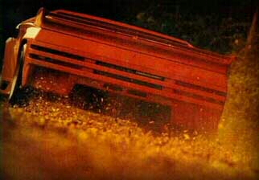

Vector W8-WX3

The W8 above WX3 below


Specs(W8/WX3)
Price |
$332,500 / N/A |
Top Speed |
218mph / 250mph(claimed) !! |
Acceleration |
|
Engine |
|
0-30mph |
N/A |
Type |
Twin turbo V8, 16valve SOHC / same |
0-60mph |
4.2sec / 2.9sec(claimed) |
Displacement |
6L(5973cc) / 7L |
0-100 |
N/A |
Power |
625hp@5700rpm / 1100hp@?rpm (!!!) |
1/4 mile |
N/A |
Torque |
630 lbs-ft@4900 / N/A |
Weight |
3,572 lbs / N/A |
Handling |
|
Gas mileage |
8.4mpg(for M12) |
Skidpad |
N/A |
City |
N/A |
600ft slalom |
N/A |
Highway |
N/A |
Powertrain |
Mid-engined, rear wheel drive, 3 speed auto / N/A |
(? = incomplete data or unverified info, N/A = info Not Available)
Beyond the specs:
The Vector W8 was an amazing vehicle; it combined a futuristically themed cockpit with performance that was also ahead of its time. This car with its amazing 625hp twin-turbo 6 liter V8 easily out performed every car of its time until the Bugatti came. The W8's aerodynamics allowed it to get an amazing top speed of 218mph! It was an All-American Chevy powered Ferrari and Lamborghini beating supercar which is still amazing for its $332,500 original price tag. After seeing it, it comes as no surprise that this car's very rigid design was influenced by current aircraft design. Then Vector released its plans to make the WX3 successor to the W8, it had an amazing 1100hp turbo charged and enlarged version of the old engine plus an all-new more aerodynamic body. This car was going to be the fastest car ever, but after financial problems and a power struggle, the plan is killed and Lamborghini gets Vector. In Lamborghini's hands the car is corrupted and is fitted with the Lamborghini Diablo's bigger but much less powerful V12 making it the M12. Only 20 total W8s and M12s are made, the M12 is eventually dropped, and this American supercar tainted by Italian hands is forgotten in history as a failure. Its truly a sad story but, if you can get your hands on an M12 and the old W8's engine, with a little engine transplant, displacement enhancement, and new turbochargers you make your own WX3.
~Oracle